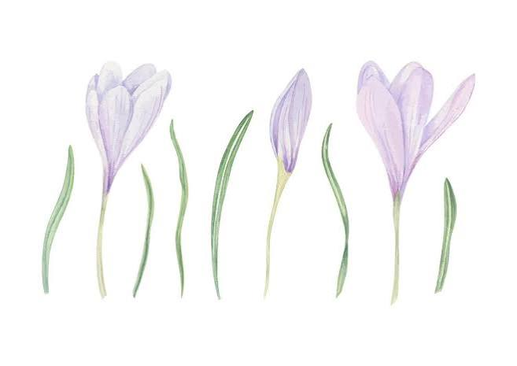
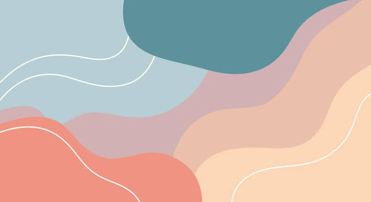
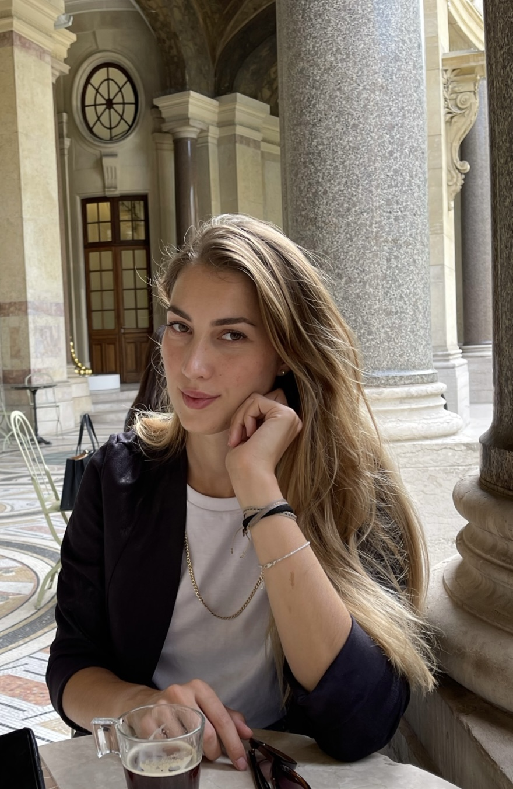

Salute mentale
Visualizzazione e Ascolto
Un percorso di ascolto, consapevolezza e cambiamento, costruito intorno alla tua esperienza.
Uno spazio dove scopriremo insieme i temi ricorrenti e gli strumenti utiliti per autonomizzarti nel tuo percorso.

Metodo
Immagina che ogni percorso che compie una persona sia un fiume.
Come professionista sono presente per aiutarti a capire in che direzione stai andando, sono presente nell'elaborare gli ostacoli e sviluppare gli strumenti per superarli. Il percorso che svilupperemo insieme verterà sul costruire degli strumenti che ti permettano di superare ogni nuovo ostacolo che si presenti ma anche affrontare quelli vecchi che potrebbero ripresentarsi.
Il fiume segue il proprio corso, va alla velocità a cui deve andare,rallentando e velocizzando quando ne ha bisogno. Non si tratta di un percorso di guarigione ma di rafforzamento.
L'ostacolo non cessa di esistere, cambia semplicemente il tuo atteggiamento verso di esso. In questo percorso tu sei il protagonista e decidi tu a che velocità riesci ad andare.

Il mio ruolo è quello di aiutare a costruire gli argini del fiume, ma solo tu decidi dove e come scorrere.
Il mio modo di lavorare
Un approccio integrato, umano e personalizzato
Sono una professionista della salute mentale e credo in un approccio olistico, fondato sull’integrazione tra conoscenze scientifiche, ascolto autentico e attenzione alla complessità di ogni persona.
Cresciuta a Pietrasanta in un contesto familiare americano-norvegese, ho sviluppato una sensibilità interculturale che orienta il mio modo di accogliere storie, valori e bisogni diversi.
La mia formazione mi ha permesso di acquisire strumenti per accompagnare la persona nella sua interezza, costruendo percorsi personalizzati e rispettosi dei suoi tempi, delle sue risorse e dei suoi obiettivi. Integrando vari aspetti del conscio e del subconscio per poter trovare strumenti utili alla vita di tutti i giorni.
Offro uno spazio sicuro in cui esplorare emozioni, difficoltà e risorse, con l’obiettivo di favorire una maggiore comprensione di sé e un cambiamento sostenibile. Chiedere aiuto può essere un gesto di consapevolezza e forza: un primo passo verso un benessere più autentico e duraturo.
Formazione e percorso professionale
Le principali tappe della mia formazione e della mia esperienza professionale.
-
2020 — 2023
Laurea triennale - Scienze e Tecniche Psicologiche
Unversità degli studi di Firenze - Percorso di Psicologia Cognitiva
-
2020 — 2023
Fomazione Ipnosi e Rilassamento guidato
Formazione in Ipnoterapia, tecniche di rilassamento guidato, immaginazione attiva. Tecniche e strumenti di visualizzazione, gestione del dolore e dell'ansia. Istruttrice e insegnate nei corsi internazionali di Ipnosi, regressione di età e regressione alle vite passate.
Alliance Training - Michael Newton Institute - IACT -
2025
Tirocinio Professionalizzante
PERLAB, Laboratorio di Psicologia, Emozioni & Ricerca - Firenze
Tirocinio e formazione in Intelligenza Emotiva nei contesti scolastici, aziendali e indivduali.
-
Maggio-Novembre 2025
Borsa di ricerca laboratorio DIEF - Firenze
Borsa di ricerca in neuroscienze sociali Collaborazione con il dipartimento di ingegneria robotica nella gestione e interface in machine learning per il controllo inibitorio
-
2023 — 2025
Laurea magistrale - Psicologia Clinica e Neuropsicologia
Università degli studi di Firenze - Laurea Magistrale in Psicologia Clinica e Neuropsicologia Curriculum di Assessment in Interventi di Neuropsicologia con orientamento Neuroscienze
Tesi di Laurea: Connettività Prefrontale e Controllo inibitorio -
2022-2025
Laboratorio Cogpsy
Collaborazione laboratorio di Ricerca in Neuroscienze e Psicologia Cognitiva Controllo cognitivo, inibizione e connettività EEG
-
Novembre 2025
Abilitazione Psicologa Clinica
Esame di stato abilitazione Psicologo - Università degli studi di Firenze
-
2024 — In corso
Istruttrice in Ipnoterapia
Istruttrice e insegnante in corsi internazionali di Ipnosi, regressione di età e regressione alle vite passate.

Sedute
Credo nell'importanza di uno spazio sicuro in cui esplorare emozioni, vissuti e schemi relazionali, per favorire maggiore consapevolezza e nuove possibilità di cambiamento.
I percorsi vengono strutturati insieme, definendo durata e frequenza degli incontri in base alle esigenze individuali. Ognuno di noi ha una storia che può essere riscritta, possiamo cambiare la narrazione e ridefinire il nostro ruolo all'interno di essa.
-
Colloquio psicologico
Uno spazio di ascolto e confronto dedicato alla comprensione dei vissuti, delle emozioni e delle difficoltà attuali. Analizziamo insieme quali sono i temi ricorrenti e gli ostacoli presenti.
Durata 60 minuti
Investimento 75 €
-
Rilassamento guidato e visualizzazione
Tecniche orientate a favorire ascolto corporeo, regolazione emotiva e maggiore contatto con le proprie risorse interiori. Utilizziamo una dimensione in cui utilizziamo l'immaginazione attiva per lasciar emergere gli elementi chiave della nostra storia.
Durata 120 minuti
Investimento 150 €
-
Ipnosi e regressione
Un viaggio esperienziale che aiuta ad analizzare temi ricorrenti all'interno di un percorso integrato tra conscio e inconscio. Esploriamo insieme un percorso dove eventi di vita hanno avuto un'influenza sulla costruzione degli schemi presenti.
Durata 180–220 minuti
Investimento 245 €
-
Pacchetto di sedute
Durata Da stabilire insieme
Investimento Da stabilire insieme
Uno spazio per ciò che stai vivendo
A volte può essere difficile dare un nome a ciò che sentiamo.
Possiamo partire da qui
Contatti

Per informazioni o per fissare un primo colloquio,
Siti web affiliati
Risorse e realtà professionali con cui collaboro o a cui sono affiliata.